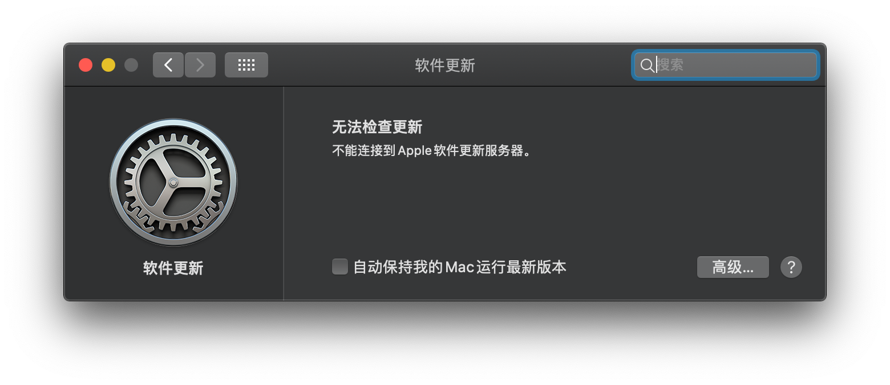
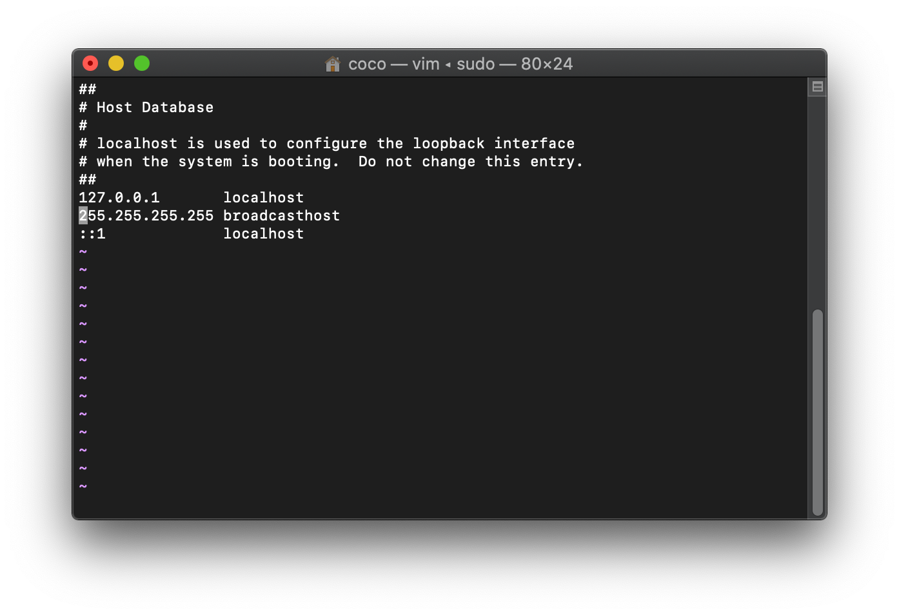
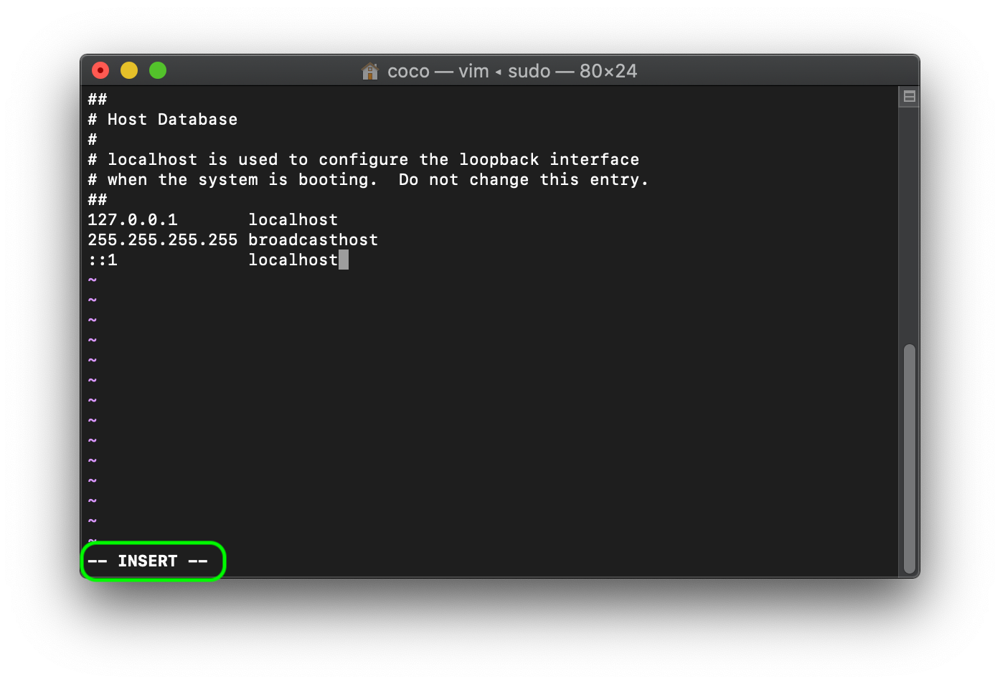
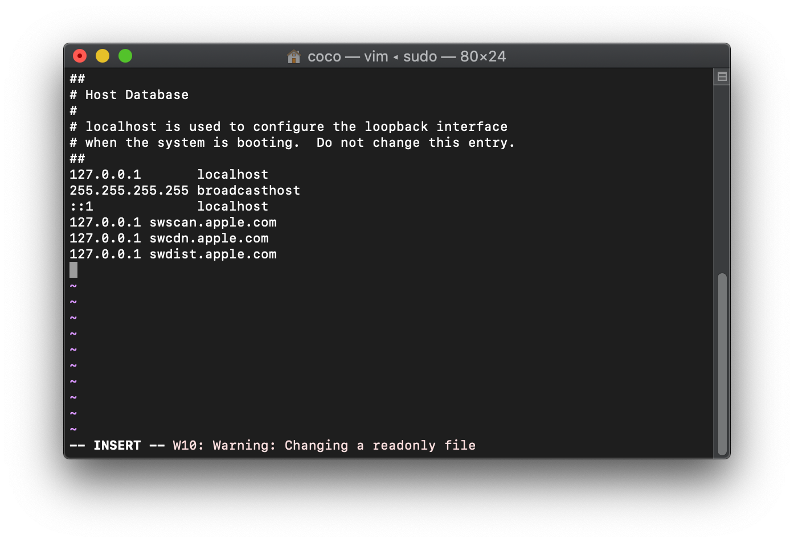
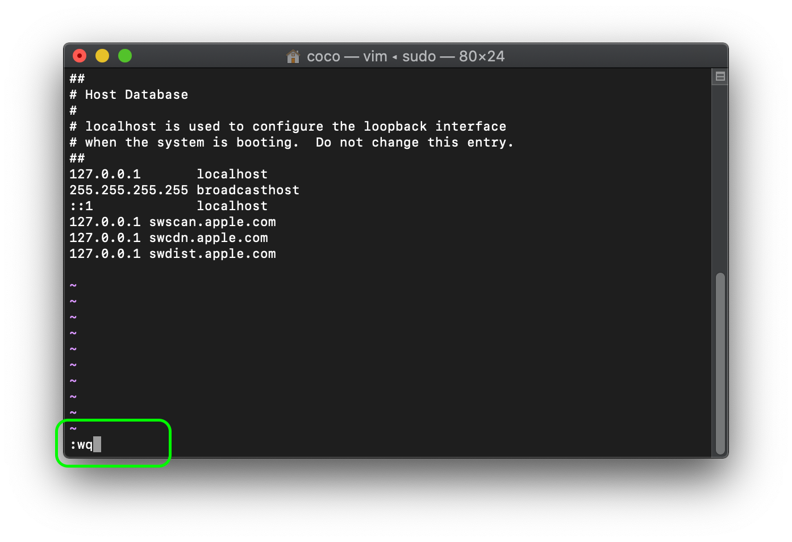

MacOS-Catalina-彻底屏蔽系统更新
title: MacOS Catalina 彻底屏蔽系统更新
date: 2021-02-04 22:24:43
categories: 计算机
tags:
-
Mac
Mac OS Bigsur 正式版发布后，Catalina会经常检查更新，不仅会在docker栏出现小红点，当点击苹果菜单时也会有相关的信息，逼死强迫症。通过下面的方法屏蔽后，随意点进系统更新，也不会出现小红点了

修改host
1.打开终端（Terminal），输入命令
sudo vim /etc/hosts
输入密码（密码不会显示，输完直接回车），打开后大概是这个样子的

2.切换到英文输入法，按'i'键，切换到编辑模式（图片所示）

3.使用方向键将光标移动至最后-->回车-->将下列代码粘贴进去
127.0.0.1 swscan.apple.com
127.0.0.1 swcdn.apple.com
127.0.0.1 swdist.apple.com

修改后应该如上图
4.保存内容：按'esc'键-->输入':wq'（使用按键输入，输入后入下图）-->回车

去除现有小红点
打开终端（Terminal），输入命令
defaults write com.apple.systempreferences AttentionPrefBundleIDs 0 && killall Dock
现在就彻底的屏蔽系统更新了，随意点进系统更新也检查不到了，当想要更新系统时，反向操作，把加入host里面的东西删除就行。